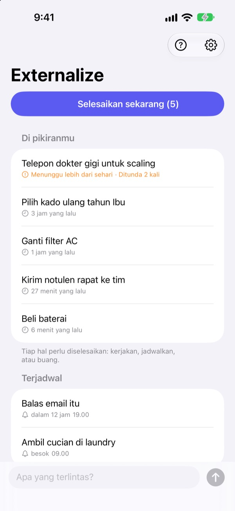
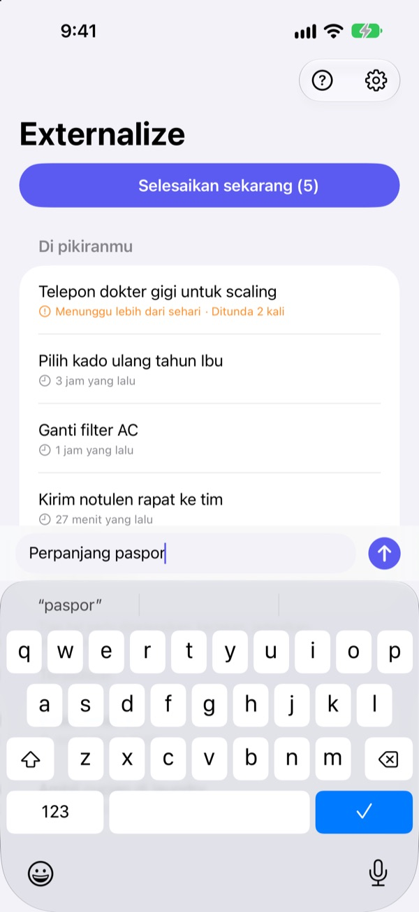
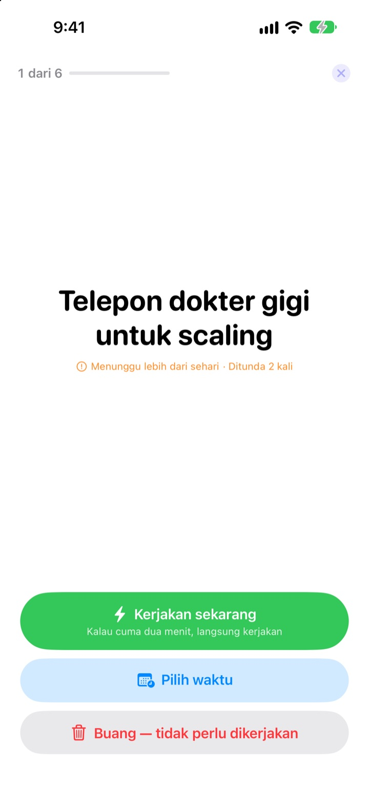
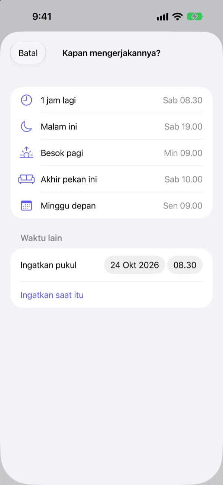

Catat sekarang.
Beresin nanti malam.
“Oh iya, aku harus…” Keluarkan dari kepala dengan beberapa kata, lalu lupakan. Malamnya, bereskan sisanya satu per satu.
Semua fitur gratis. Tanpa akun dan tanpa login.

Coba di sini
Ketik sesuatu yang sedang kamu pikirkan, atau ketuk contoh. Lalu tekan “Selesaikan sekarang” dan beri akhir untuk tiap hal.
Hal kecil pun makan tempat di kepala
Lagi mandi, lagi nunggu lampu merah, mau tidur: “Aku harus ngerjain itu.” Nggak ada tempat buat mencatat, jadi kamu terus mengingatnya, dan yang sedang kamu kerjakan jadi nggak fokus. Aplikasi to-do minta bikin daftar dan tenggat dulu, jadi mencatat pun jadi pekerjaan.
Tiga detik, lalu lupakan
Buka aplikasi dan langsung ketik di baris paling bawah. Tanpa daftar, folder, atau tenggat.
Ketuk widget di Layar Terkunci, aplikasi terbuka dengan baris kosong. Bilang Ingat di Externalize ke Siri atau pasang di Tombol Tindakan, dan langsung tersimpan tanpa membuka aplikasi.

Malam hari, satu per satu
Kalau masih ada yang tersisa, kamu dapat satu pengingat jam 21.00. Kalau semuanya beres, nggak ada pengingat.
Saat mulai membereskan, tiap hal muncul satu per satu dengan tulisan besar. Pilih “Kerjakan sekarang”, “Pilih waktu”, atau “Buang”, lalu lanjut ke berikutnya. Kalau cuma dua menit, nyalakan timer dan langsung kerjakan.

Nggak ada yang terbengkalai
Pilih “1 jam lagi”, “Malam ini”, “Besok pagi”, “Akhir pekan ini”, atau “Minggu depan”, dan hal itu akan kembali tepat waktunya. Dari notifikasi, kamu bisa langsung pilih “Selesai”, “Besok pagi”, atau “Buang”.
Yang sudah menunggu lebih dari sehari dan yang terus kamu tunda akan ditandai, jadi kelihatan mana yang selalu terlewat.

Mulai dalam tiga langkah
- 1
Catat
Beberapa kata di aplikasi, di widget Layar Terkunci, atau lewat Siri, mana yang paling dekat.
- 2
Izinkan notifikasi
Aplikasi bertanya sekali, saat pertama kali kamu mencatat. Dipakai untuk pengingat malam dan waktu yang kamu pilih.
- 3
Bereskan malamnya
Ketuk pengingat atau “Selesaikan sekarang” dan beri akhir untuk tiap hal.
Langsung dari daftar
- Ketuk satu hal
- pilih “Selesai”, “Pilih waktu”, atau “Buang”
- Geser ke kanan
- Selesai (hilang dari daftar)
- Geser ke kiri
- Buang, atau “Jadwalkan” untuk memilih waktu
- Selesaikan sekarang
- bereskan sisanya satu per satu
- Ingat di Externalize
- bilang ke Siri tanpa membuka aplikasi
- Pengaturan ▸ Pengingat malam
- ubah jam atau matikan
Saat menjadwalkan, “Malam ini” berarti jam 19.00, “Besok pagi” jam 09.00, “Akhir pekan ini” Sabtu jam 10.00, dan “Minggu depan” Senin jam 09.00. Kamu juga bisa memilih tanggal dan jam sendiri.
Pertanyaan umum
Bisa mencatat tanpa membuka aplikasi?
Bisa. Bilang Ingat di Externalize ke Siri, Siri akan menanyakan apa yang mau dicatat lalu menyimpannya. Pasang pintasan “Catat” di Tombol Tindakan lewat Pengaturan, dan cukup sekali tekan.
Gimana cara menambah widget di Layar Terkunci?
Sentuh dan tahan Layar Terkunci, ketuk Sesuaikan lalu pilih Layar Terkunci, ketuk area widget dan tambahkan Externalize. Sekali ketuk membuka baris kosong, dan widget menunjukkan berapa yang tersisa. Ada juga widget kecil untuk Layar Utama.
Bisa ubah jam atau mematikan pengingat malam?
Ketuk ikon roda gigi di kanan atas ▸ Pengingat malam untuk mengubah jam atau mematikannya. Bawaannya jam 21.00, dan di hari tanpa sisa, pengingat tidak muncul.
Notifikasi nggak masuk.
Kalau pengaturan Externalize bilang notifikasi mati, ketuk tombol di situ untuk menyalakannya di Pengaturan iPhone. Di hari tanpa sisa, pengingat malam memang tidak muncul.
Bagaimana hal yang dijadwalkan kembali?
Notifikasi muncul di waktu yang kamu pilih. Sentuh dan tahan untuk langsung pilih “Selesai”, “Besok pagi”, atau “Buang”. Kalau dibiarkan, hal itu kembali ke “Di pikiranmu” dan dibereskan di sesi berikutnya.
Bisa mengembalikan yang sudah ditandai selesai atau dibuang?
Nggak bisa. Yang sudah dibereskan hilang dari daftar dan tidak ada arsip. Kalau masih ragu, pilih waktu saja daripada membuangnya.
Kalau ganti HP, catatannya ikut pindah?
Nggak. Semua tersimpan di perangkat ini saja dan tidak pernah dikirim ke iCloud atau server. Kalau aplikasi dihapus, catatannya ikut terhapus.
Bisa dipakai di perangkat apa?
iPhone dengan iOS 17 atau lebih baru.
Ada pertanyaan atau menemukan bug? Kirim email ke leeo@kakao.com. Sertakan model iPhone dan versi iOS supaya bisa kami cek lebih cepat.